Extracts the estimated coefficients and their confidence intervals.
Extracts the estimated coefficients and their confidence
Value
A ggplot object with the estimated coefficients and their confidence intervals.
A ggplot object with the estimated coefficients and their confidence intervals.
Examples
set.seed(123)
trade_2006 <- trade_panel[trade_panel$year == 2006, ]
trade_2006 <- trade_2006[sample(nrow(trade_2006), 500), ]
mod <- fepoisson(
trade ~ log_dist + lang + cntg + clny | exp_year + imp_year,
trade_2006
)
autoplot(mod, conf_level = 0.99)
set.seed(123)
trade_2006 <- trade_panel[trade_panel$year == 2006, ]
trade_2006 <- trade_2006[trade_2006$trade > 0, ]
trade_2006 <- trade_2006[sample(nrow(trade_2006), 500), ]
trade_2006$log_trade <- log(trade_2006$trade)
mod <- felm(
log_trade ~ log_dist + lang + cntg + clny | exp_year + imp_year,
trade_2006
)
autoplot(mod, conf_level = 0.90)
